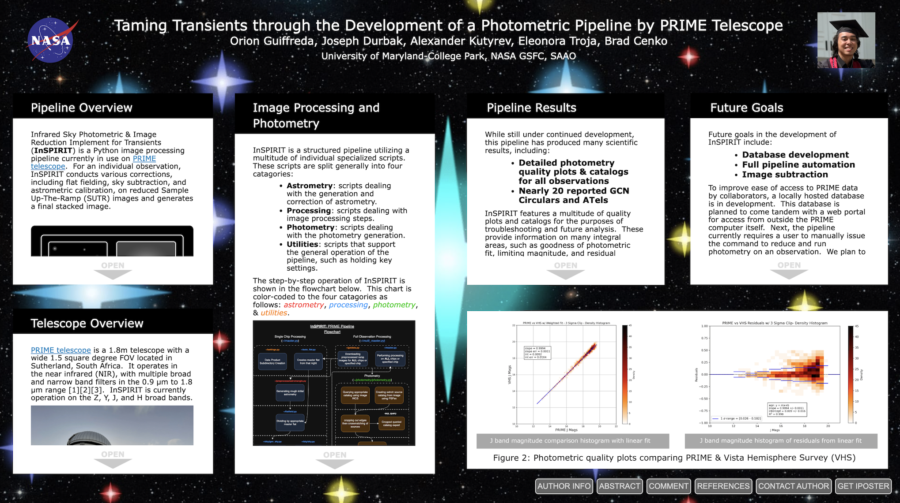

Home
About
CV
Code
Media
Photos
Contact
☰
Assorted Media!
Here's a collection of media (posters and presentations and such) so far in my career.
AAS245 iPoster - 15 Jan 2025
I presented an iPoster on the current capabilities and future goals for InSPIRIT, my image processing and photometric pipeline for PRIME telescope.
Click on the image below for a link to the iPoster.

AAS246 iPoster - 11 June 2025
I presented an iPoster on the history of reported transient events by PRIME, along with new improvements and prospective goals for InSPIRIT, the PRIME pipeline.
Click on the image below for a link to the iPoster.